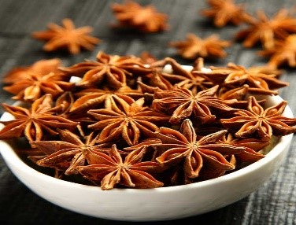

Indian food is just something out of this world and always stands out of the crowd. It is definitely popular all over the globe, be it in any country. Every dish is scrumptious and extremely versatile, from piping hot idlis and dosas to the very rich Butter Chicken. Indian food is not only a wonderful combination of delicate flavours and spices, but it is also a symphony of different nutrients which make it healthy.
What makes Indian cuisine exceptional?
| SPICE | FLAVOUR | IMAGES |
| Cumin (जीरा) | It is among the most popular spices of Indian cuisine which leave a warm & fresh taste that overpowers its slight bitterness. People usually use cumin in the form of whole seeds. However, one can roast or ground these seeds too. |  |
| Cardamom (इलायची) | This spice has a herbal and citrusy smell and is often used in Indian Chai (tea) and desserts. | |
| Hot Spices Mix (गर्म मसाला) | Garam Masala loosely translates to “hot spice” in English. So, as the name suggests, it adds a little spice to the dish. It is a mixture of a set of different spices which is widely used in Indian cooking. | |
| Coriander (धनिया) | Coriander powder is an extremely healthy spice that people utilize in different forms in Indian cuisines. The seeds, as well as the leaves of coriander, are used as seasoning for a dish. It is an important spice in garam masala and gives off a fresh and nutty taste to food. | |
| Turmeric (हल्दी) | Turmeric is used in almost every Indian dish & not only has a warm and earthy taste but also has medicinal qualities. It adds vibrant colour to the dish as well. | |
| Saffron (केसर) | Saffron has a sweet honey-like smell and is often used in plain milk or tea. | |
| Asafoetida (हींग) | This spice has a truffle-like, garlicky flavour & pungent smell. Even a pinch adds depth to many Indian dishes. | |
| Mustard Seeds (सरसों के बीज) | Mustard seeds add a spicy and bitter quality to many Indian dishes and are often spluttered in hot oil to bring out their flavour. | |
| Red Chilli Powder (लाल मिर्च पाउडर) | Dried red chillis are grounded into a powder which adds heat to the dish & a beautiful red hue | |
| Nutmeg (जायफल) | It is the inner seed of mace and has a sweet taste. It adds a warm flavour to certain dishes and is usually paired with saffron. | |
| Cloves (लौंग) | Cloves have an anise-like flavour with strong medicinal qualities. | |
| Black Pepper (काली मिर्च) | It provides a distinct flavour, spice, and aroma to the recipe. | |
| Bay leaf (बे पत्ती) | The pungent leaves, and have a pleasant aroma & taste similar to cinnamon. | |
| Carom seeds (अजवाइन) | It looks similar to cumin seeds, but it has a powerful fragrance. It also smells like a herb and somewhat tastes like a mix of oregano and anise. | |
| Fenugreek leaves (कसूरी मेथी) | This dried herb adds a unique flavour to recipes. It is also used as a garnish and has a bitter-sweet taste. | |
| Cinnamon (दालचीनी) | It has a slightly sweet flavour and is used in many traditional recipes and many drinks like hot chocolate and coffee for a pinch of spice. It adds a unique intensity to the drink and makes it more enjoyable. | Fennel (सौंफ) | The dried fennel seeds and belongs to the flavorful and aromatic parsley family. It is a spice that aids in digestion and is consumed by many people after a heavy meal. |
| Dried Mango Powder (अमचूर) | It is a fruity type of masala that is made using dried unripe mangoes. It is added to dishes for a tangy flavour and enhanced taste. It is best to use this spice to prepare pickles, chutneys, spreads, and soups. | |
| Ginger (अदरक) | It is an absolutely essential ingredient for most curries and is one-half of the recipe for ginger garlic paste, used in most food in India. Both ground ginger and ginger powder are used in cooking which makes any dish more flavorful and enjoyable. | |
| Star Anise (चक्र फूल) | Anise tastes like fennel, but sharper and less floral. It is used in some preparations of Garam Masala and is a delicious frying spice, and is the key seasoning of the incredible tamarind chutney. |  |
| Curry leaves (करी पत्ते) | Curry leaves are one of the most enigmatic Indian spices and are best used fresh to impart a pungent, citrus-like aroma. |